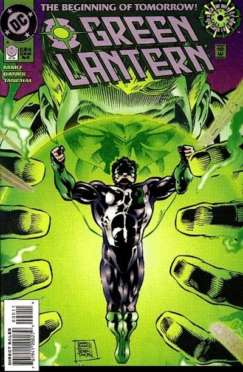
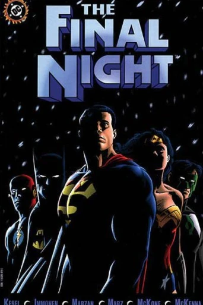
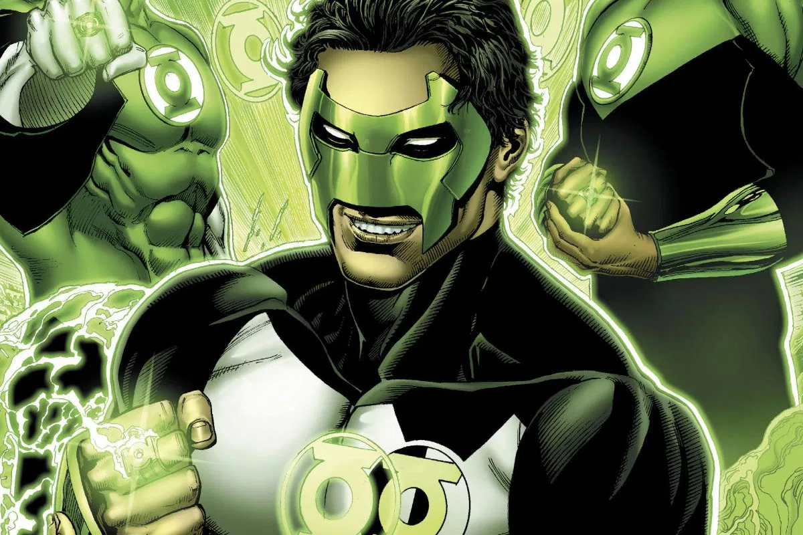

No decorrer da jornada de Kyle Rayner como lanterna, muitas vezes ele se encontrou com Hal Jordan (Parallax). Seja em batalhas, viagens no tempo ou grande sagas, a questão é que o contraponto dos dois personagens sempre gerava histórias incríveis que incrementavam o volume da revista.

Escrita por Karl Kesel e desenhada por Stuart Immonen, em Noite Final uma criatura chamada "Devorador de Sóis" se aproxima de nosso Sol e suga sua energia. Como reação, a estrela irá entrar em Nova. Com alguns dos heróis incapacitados, principalmente o Superman - que enfraquece com a falta de energia solar - a única esperança de salvação acaba repousando nas mãos de... Parallax! É isso mesmo, o vilão ex-herói acaba sendo o único ser poderoso o bastante para deter o Devorador de Sóis. Mas a que custo? É nessa saga que ocorre o famoso sacrifício da Hal Jordan para manter o sol aceso.

Com o sacrifício de Hal Jordan nos eventos da Noite Final, o antigo patrulheiro esmeralda se torna o Espírito da Vingança do universo DC. Tornando-se ainda mais poderoso e onipresente, o espectro foi a maneira de manter Hal presente nas histórias, mesmo após sua morte.